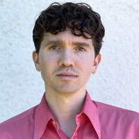

The Washington Post
84 people whose festival biography mentions The Washington Post. A mention can mean a job, a past job, a grant, a broadcast or an award: read the bio for which.

- Laura BlumenfeldModerator · 2 editions, 2018–2024


- Lauren SelmanFestival team · 2 editions, 2015–2016
 Madeleine BairPanelist · 2021
Madeleine BairPanelist · 2021- Martin BaronPanelist · 2015

 Yoni BrookPanelist · 2021
Yoni BrookPanelist · 2021


 Ben Conarck2026
Ben Conarck2026- Marcia DavisModerator, panelist · 2018

- Isaac Stone FishPanelist · 2020
- Michael Fletcher2021
 Robin GivhanModerator · 2025
Robin GivhanModerator · 2025
- Sally HaydenPanelist · 2019
 Dana HedgpethModerator · 2024
Dana HedgpethModerator · 2024 David HerszenhornModerator · 2023
David HerszenhornModerator · 2023
- Patrick Jaicomo2026
 Tracy JanModerator · 2023
Tracy JanModerator · 2023 Eugene JareckiPanelist, filmmaker · 2025
Eugene JareckiPanelist, filmmaker · 2025
- Suki KimPanelist · 2017
 Vanessa KjeldsenFilmmaker · 2024
Vanessa KjeldsenFilmmaker · 2024
Jarrett LeyPanelist · 2026- Myra MacPhersonPanelist · 2016
- Robert MaguirePanelist · 2018
 James McLaughlinPanelist · 2026
James McLaughlinPanelist · 2026- Betty MedsgerPanelist · 2015
 Wesley Morgan2021
Wesley Morgan2021 Ellen NakashimaModerator · 2025
Ellen NakashimaModerator · 2025 Maggie Penman2026
Maggie Penman2026 Jenna PirogPanelist · 2021
Jenna PirogPanelist · 2021 Amy SchwartzModerator · 2024
Amy SchwartzModerator · 2024 Ian ShapiraModerator · 2025
Ian ShapiraModerator · 2025 Jamie ShorFestival team · 2015
Jamie ShorFestival team · 2015
- Edward SnowdenPanelist · 2015
- Joe StephensPanelist · 2021
 Ray Whitehouse2025
Ray Whitehouse2025
 Joanna ZelmanPanelist · 2026
Joanna ZelmanPanelist · 2026- Kyra ZemanickFestival team · 2018